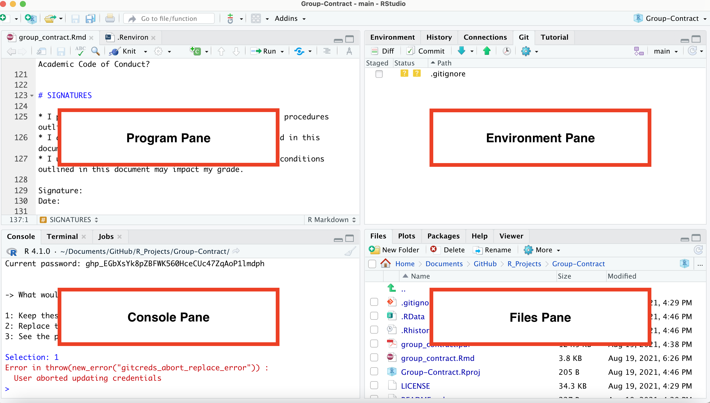

Configuring RStudio with GitHub
Getting Started
Below are instructions for setting up our course environment. We’re going to walk through them together, but different groups might get stuck at different points in the process. If you get stuck, hold up a block flag, which indicates to me that you need help.
I’m going to start off by saying that I dread this day every time I teach R in a course. Students have different computers, sometimes have older versions of software installed on them, and different levels of experience setting up coding environments. I’ll also admit that as a former CS undergrad, for me, the absolute hugest barrier to getting started on any project was getting my coding environment set up. We are going to run into frustrations today; it’s inevitable. I’m going to do whatever I can to support you through them, which is why I’m carving out class time to do it. I don’t expect every issue we run into to be sorted out by the end of class or even by class on Monday. I’m telling you this because I don’t want you to worry if you run into roadblocks in setting up in your environment. We will get through them. On the other hand, some of you might breeze through this, having certain components already set up or having previous experience configuring GitHub. While not required, if you finish early and would be willing to help me troubleshoot other issues that come up, it would certainly be appreciated.
Don’t worry if you don’t know what certain terms mean at this point. We will be going over things like the difference between R and RStudio, what a package is, what it means to commit code, and what a quarto file is a little later in the semester. I just believe it will be easier to follow along with me in learning those things if you can follow along on your own computers. That’s why we’re taking this step to get things up and running so earlier in the semester.
Step 1: Create GitHub Account
You should create a GitHub account here. When choosing a username, I encourage you to:
- Include some version of your actual name
- Keep it short!
- Avoid including things that designate this moment in time. (Don’t include “Smith student” or “2022”)
Step 2: Install R and RStudio
I’m assuming that everyone in this course already has R and RStudio installed - either because you are in SDS 100, and you installed things yesterday, or because you’ve taken a course in R before. If you haven’t installed R and RStudio, follow these instructions to do so.
Step 3: Open RStudio
When you open RStudio, if you get a prompt to install “git” command line tools, don’t dismiss it. Click ‘Install’. You’ll see why in the next step.
Note the different sections of the RStudio interface.

This was happening for a few students on Windows machines. The reason is that you are clicking the file to install/RStudio, rather than the file to open the application. See if you can find the icon for RStudio when you open C:/ProgramFiles. The icon should look like this:


This means that you likely installed RStudio but not R. Check back in on the instructions in Step 2 to make sure that you install R and RStudio.
CONGRATULATIONS! You’ve installed all of the software needed for this course. Now onto configuration.
Step 4: Install git
This is going to be different for different students depending on what type of operating system you are using.
Step 4 for MacOSX
If you just recently installed RStudio, when you open RStudio, you may see a window that looks like this:
If you see this image, you should click ‘Install’. It will likely take a few moments to install.
If you don’t see this image, it could be because git is already installed on your computer. You can check by navigating to the Console pane at the bottom of your screen and clicking on the ‘Terminal’ tab. Enter the following in that window: which git. If git is not installed, the window will tell you so. If it is installed, it will report a file path. My file path looks like this: /usr/bin/git, but yours may look different.
If git is not installed at this point, then you should copy and paste the following into your terminal and click enter:
xcode-select --installStep 4 for Windows
Check if git is already installed by navigating to the Console pane at the bottom of your screen and clicking on the ‘Terminal’ tab. Enter the following in that window: where git. If git is not installed, the window will tell you so. If it is installed, it will report a file path. My file path looks like this: /usr/bin/git, but yours may look different.
If git is not installed at this point, then you should install Git for Windows here. When installing, you will be prompted about “Adjusting your PATH environment”. When this happens, you should select “Git from the command line and also from 3rd-party software”.
We want to be absolutely sure that git is properly installed before moving on. Navigate to the Console pane at the bottom of your screen and clicking on the ‘Terminal’ tab. If you are using a Mac, enter which git. If you are using a Windows, enter where git. If git is installed, you should see a file path to git (most likely in a bin folder). If you get an indication that git can’t be found, raise a blocker flag.
Step 5: Install usethis
Many of you will have already installed the usethis package in SDS 100 yesterday. If for some reason you didn’t, you should follow the instructions below to install usethis.
- Ensure that you are in the ‘Console’ at the bottom of your screen.
- Copy and paste
install.packages("usethis")into your console and click enter. - You will be asked “Do you want to install from sources the packages which need compilation? (Yes/no/cancel)”, and you can type ‘yes’. After that, a bunch of lines of code will run with red font.
In your console type install.packages("rlang"). Then re-try Step 7.
Step 6: Configure git
Copy and paste
library(usethis)into your Console to load the library.Copy and paste the following into your console, replacing USERNAMEHERE with your GitHub username and EMAILHERE with your GitHub email:
use_git_config(user.name = “USERNAMEHERE”, user.email = “EMAILHERE”)
Error in new_git_error("git_error", args = args, stdout = out, status = attr(out, :
System git failed: xcrun: error: invalid active developer path (/Library/Developer/CommandLineTools), missing xcrun at: /Library/Developer/CommandLineTools/usr/bin/xcrunSwitch to the Terminal tab in the bottom left hand corner of RStudio and enter the following:
xcode-select --install
Then try again.
Following the instructions at this link: https://happygitwithr.com/rstudio-see-git to tell RStudio where to find git.
If you’ve configured git on your computer before, you can edit your git config by following these instructions:
Edit gitconfig file from David Keyes on Vimeo.
Step 7: Create Personal Access Token
- Navigate to Github.com and log-in.
- At Github.com, click on your user icon (top right hand corner) and then ‘Settings’.
- At the very bottom of the left side panel, click ‘Developer Settings’
- In the right sidebar, click ‘Personal Access Tokens’, and then on the page that appears, click ‘Generate New Token’.
- In the ‘Note’ field, enter “SDS 192”
- Set the ‘Expiration’ to ‘Custom’, and then select a date after December 12, 2022.
- Check the box next to ‘repo’ in Select Scopes.
- Click the green ‘Generate Token’ button.
- Keep this window open because you will need to copy your Personal Access Token in the next step.
This video summarizes these steps:
Create a Personal Access Token (PAT) on GitHub from David Keyes on Vimeo.
Step 8: Store your Personal Access Token in RStudio
- Install the
gitcredspackage by entering the following into your RStudio Console:install.packages("gitcreds") - Load the
gitcredspackage by entering the following into your RStudio Console:library(gitcreds) - Enter
gitcreds_set()into your Console. - You will be prompted to enter your password or token. Head back over to Github.com, and copy the Personal Access Token that you created in the last step. It will be a long string of characters. Paste it into your RStudio Console.
This video summarizes these steps:
Store Personal Access Token to Connect RStudio and GitHub from David Keyes on Vimeo.
System git failed: fatal: bad config line
If you get the following error:
Error in new_git_error("git_error", args = args, stdout = out, status = attr(out, :
System git failed: fatal: bad config line ...…this means that you probably added some unrecognized characters in your git config file. Enter:
library(usethis)
edit_git_configThis will open your config file. Check to make sure you don’t have extra quotation marks in your user name or email address. It should look something like this.

CONGRATULATIONS! You’ve configured GitHub to connect with RStudio! Now onto assignment submission practice.
Step 9: Create first GitHub repo
In Moodle, scroll to the bottom of our course page to find the Getting Started Assignment link. Click this link to enter our GitHub classroom. This will copy a GitHub template repo into your GitHub account. It might take a few moments.
Step 10: Copy repo URL
Once the repo is created, copy the link to the repo that was just created to your clipboard. It should look something like https://https://github.com/sds-192-intro-fall22/getting-started/YOUR-USER-NAME
Step 11: Create git Project in RStudio
- In RStudio, click File > New Project > Version Control > Git
- In the window that appears, paste the URL that you copied in the last step into the ‘Repository URL’ box.
- Where it says ‘Create project as subdirectory of:’, click ‘Browse’. Create a new folder called “SDS 192.” You can store this folder wherever on your computer (e.g. Documents, Desktop, etc.), but I encourage you to store it in a place where you can easily find it.
- Click ‘Create Project.’
This video summarizes these steps:
How to Connect RStudio Projects with GitHub Repositories: GitHub First from David Keyes on Vimeo.
If you get this error:
remote: Support for password authentication was removed on August 13, 2021. Please use a personal access token instead.This means that you likely set up some git credentials on your computer in the past. GitHub used to identify you by a password, but now they use the special token you generated in an earlier step. To fix this, you can enter the following into your console:
install.packages("gitcreds")
library(gitcreds)
gitcreds_set()You’ll see the following message:
1: Keep these credentials
2: Replace these credentials
3: See the password / tokenClick 2. Then enter the personal access token you created in step 9. You should be able to create a project after this.
Step 12: Open, edit, and commit changes to getting-started.qmd
On the initial install, the Files tab will be in the lower right hand corner of RStudio. Open the
getting-started.qmdfile.Follow instructions in the file. Make sure to save the file.
When the file tells you to commit your code, turn your attention to the Environment pane of RStudio (i.e. upper right hand pane on initial install).
Click on the ‘Git’ tab, and then click the blank checkbox next to
getting-started.qmd. As we will learn in a few weeks, this stages a file in git.
In this same ‘Git’ pane, click the ‘Commit’ button. In the window that appears, you will be prompted to write a commit message. Enter the following in the commit message window: “added name to getting-started.qmd”
Click the ‘Commit’ button. Again, in a few weeks, we will learn what this means.
This video summarizes these steps:
Make a Commit and View More History from David Keyes on Vimeo.
Step 13: Push your code to GitHub.com
In the same ‘Git’ pane, you will see a little green upwards arrow, click this arrow to push your code to GitHub.com.